This page showcases some of the Serverless ML Systems developed by the students in the Scalable ML and Deep Learning masters level course (ID2223 at KTH university). The main requirements for the project were to build a complete ML system that includes:
In practice, these projects followed the feature-training-inference pipeline architecture for building ML systems. The programs developed included most of the following:
Nearly all projects run on free serverless ML infrastructure in the cloud. Most of the projects used some variant of the following free serverless services such as Hopsworks, Modal, Github Actions, and Hugging Face (Gradio/Streamlit). Several of them build agentic systems and RAG pipelines.
Table of Contents
https://github.com/ScalabelMlLabbar/ID2223-project
This project predicts whether URLs are phishing or secure using features extracted from the Phishing Database and Tranco list top domains. The system uses URLScan.io API to extract 8 features including domain age, TLS status, umbrella rank, and URL length. An MLP neural network achieved 94.2% test accuracy, deployed via HuggingFace Space. The UI provides real-time phishing detection with confidence scores for user-submitted URLs.
https://github.com/Edwinexd/arxiv-rag-agent
An ArXiv research assistant that automatically fetches and embeds daily preprints from ArXiv using GitHub Actions. The system uses semantic search with all-MiniLM-L6-v2 embeddings stored in Hopsworks feature store and retrieves full paper content from ArXiv HTML. Llama 3.3 70B generates streaming responses grounded in the retrieved context. The Gradio interface allows researchers to explore the latest scientific papers through conversational queries.
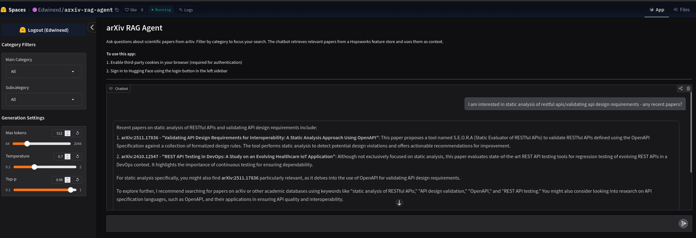
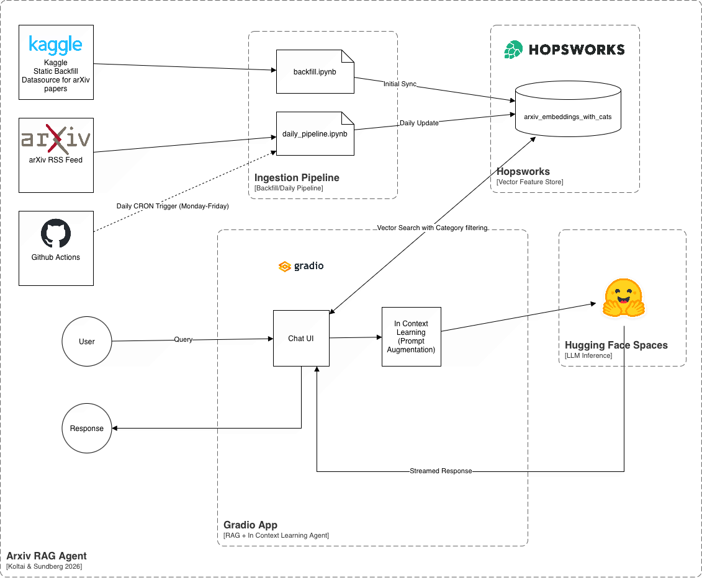
https://github.com/lippa66002/SMLDLProject
Predicts hourly occupancy levels (0-5 scale) on Skånetrafiken buses using GTFS-Realtime data from KoDa API enriched with Open-Meteo weather and Swedish calendar features. LightGBM models (one for average occupancy regression, one for max occupancy classification) are trained on lagged and aggregated features. Daily batch inference generates predictions displayed in an interactive dashboard updated via GitHub Actions. The feature store architecture uses Hopsworks for offline and online feature groups.
https://github.com/keremburakyilmaz/spotify-brain
Analyzes Spotify listening history to predict mood clusters and session start times using audio features from tracks. The system uses K-Means clustering on valence, energy, danceability, acousticness, instrumentalness, and tempo to create mood clusters automatically. XGBoost models predict next-track mood clusters using sliding window features and session start probabilities using time-based patterns. The dashboard deployed to a personal website shows mood predictions and listening patterns with automatic 30-minute updates.
https://github.com/omar-leo-samman/Short-term-traffic-congestion-prediction-for-London-Final-Project
Predicts 15-30 minute traffic congestion for London monitoring points using TomTom Traffic API, TfL disruption data, and UK DfT road metadata. Features include speed ratios, delay estimation, time-based lags, rolling behavior, and disruption indicators stored in Hopsworks feature store. Modal orchestrates automated 30-minute inference pipelines for timely predictions. Results are visualized via HuggingFace Space showing real-time predictions and traffic conditions.
https://github.com/joarp/citybike-rebalancing-agent
An LLM-based planning agent for citybike rebalancing in Palma that generates truck driver routes to optimize bike station availability. The agent uses real-time bike availability data from the citybike API and OSRM for driving distances, with data stored in Hopsworks. GPT-4o-mini with in-context learning provides route planning and handles special requests like keeping bikes in the truck. The agent workflow includes station overview visualization and natural language interaction via web interface.
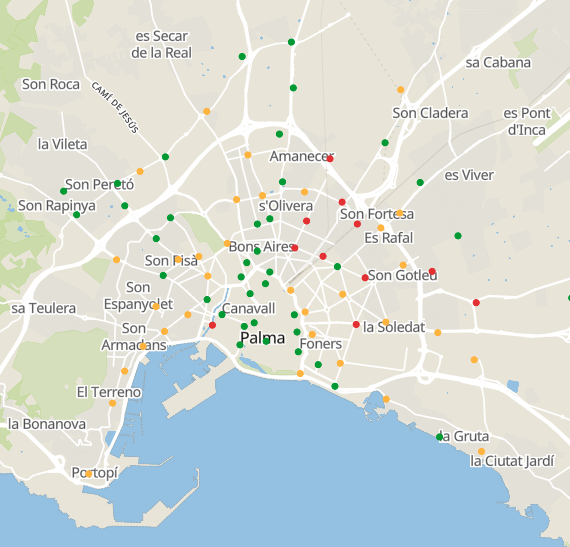
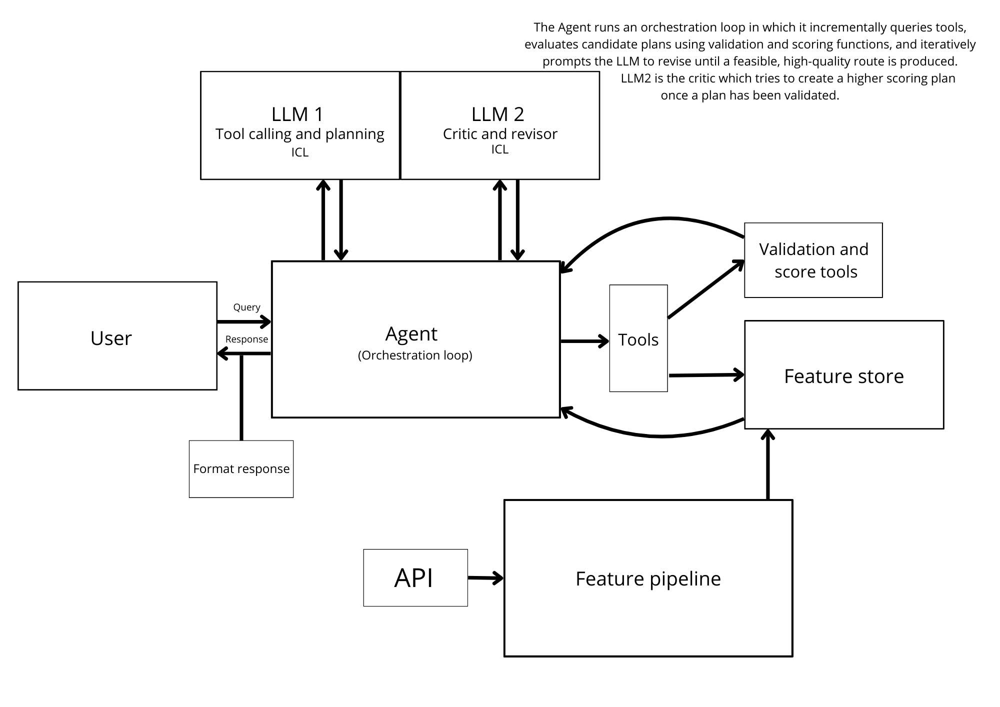
https://github.com/sachin121103/Flight-Delay-Tracker
Predicts flight delays at Stockholm Arlanda airport using Swedavia flight API, SMHI weather data, and Swedish public holidays. Features include weather conditions (temperature, wind, precipitation), temporal data (day of week, holidays, season), and flight schedules merged by timestamp. XGBoost binary classifier predicts delay probability with model and features stored in Hopsworks. Streamlit dashboard displays predictions for upcoming flights with risk assessment.
https://github.com/shvaikop/scalable_ml_project
Predicts daily water levels (cm) for Swedish lakes using SMHI hydrological observations and Open-Meteo weather data. Features include lagged water levels (1, 3, 7, 14 days), precipitation aggregations (3, 7, 14 days), snow sums, and spatial weather from 75km offsets in cardinal directions. Tree-based regression models are trained per lake station and stored in Hopsworks model registry. The Vercel-hosted frontend displays 7-day forecasts with actual vs predicted comparisons.
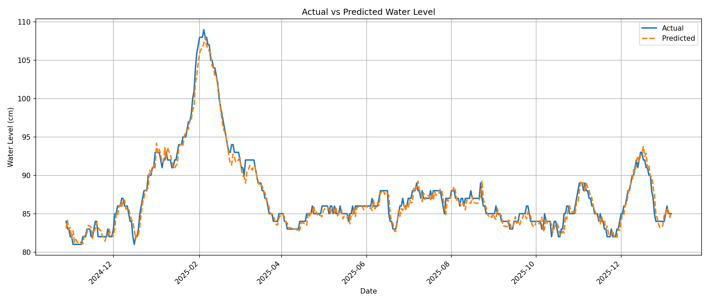
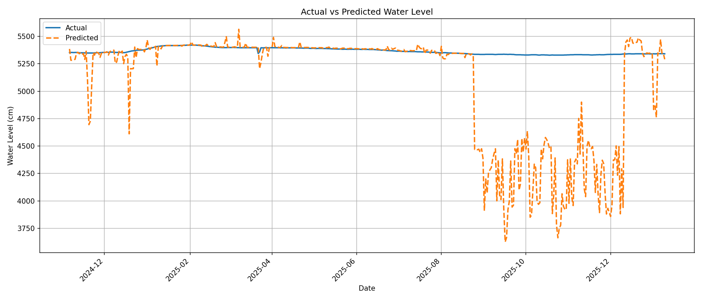
https://github.com/Ramstr/Project-Google-Calendar
Multi-agent LLM system for managing Google Calendar through natural language using LangChain and GPT-4o-mini. Three agents handle orchestration (intent classification), task breakdown (event parsing), and execution (Calendar API calls). Dynamic in-context learning saves confirmed interpretations to improve future prompts. Streamlit web interface provides chat-based calendar management with confirmation for all write operations.
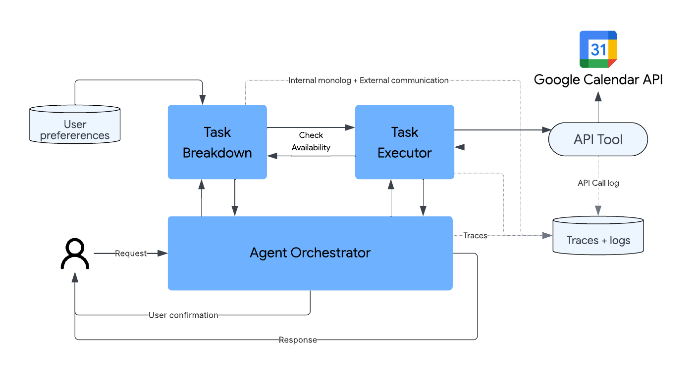
https://github.com/simonwanna/grandi
Neural network predicts chess game outcomes and provides real-time move impact analysis using PyTorch models trained on historical chess games. The system continuously fine-tunes weekly via GitHub Actions and uses Cloud Run API backed by GCS for model storage. BigQuery handles training data and observability with Looker Studio dashboards. Playable demo on HuggingFace saves gameplay logs for future fine-tuning iterations.
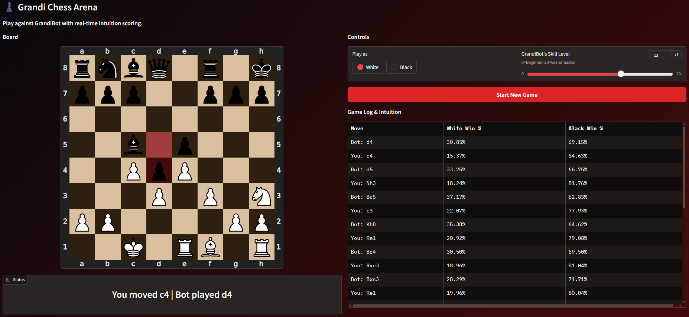
https://github.com/Zedel17/ProjectsScalable
Predicts next-day returns of QQQ ETF using technical indicators, macroeconomic data, and FinBERT news sentiment analysis. Features include RSI, moving averages, VIX volatility, 10-year Treasury yields, CPI inflation, and aggregated news sentiment scores. XGBoost models (regression for return values, classification for direction) train with time-series aware splits and purge gaps. Gradio dashboard displays predictions with feature importance and backtested trading strategy performance.
https://github.com/lukasfri/kth-id2223-project
Predicts bus arrival times for SL single-digit routes in Stockholm with individualized XGBoost models per route trained on KoDa historical data and GTFS-Regional realtime updates. The FastAPI backend serves predictions and retrains models weekly while maintaining realtime vehicle position tracking. React frontend displays live bus positions on map with dynamic arrival predictions. The system emphasizes route-specific learning to capture individual route characteristics.
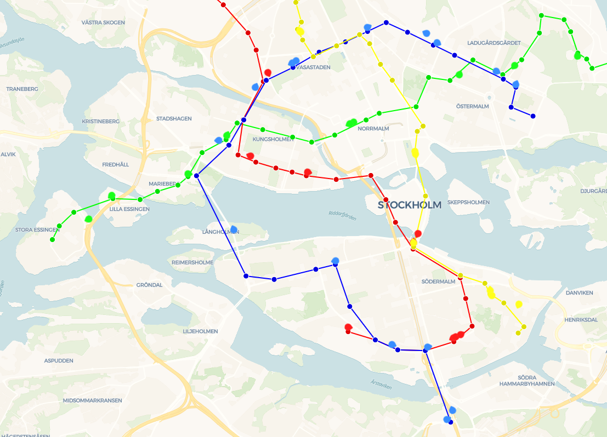
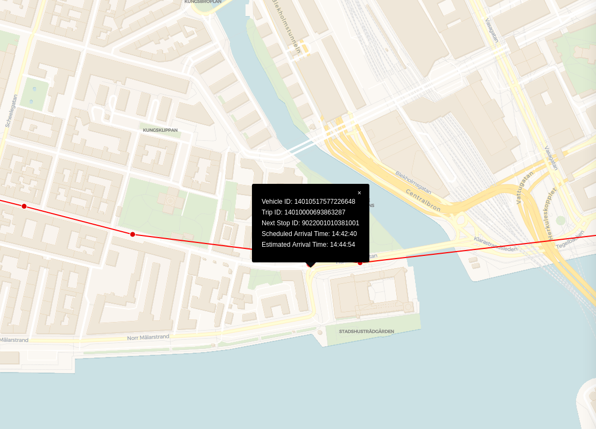
https://github.com/maxdcmn/versioned-context
MCP server that scrapes package documentation, tracks changes over time, and exposes tools for semantic search and version comparison. Daily Modal cron syncs docs from sources into ChromaDB for semantic search using all-mpnet-base-v2 embeddings. Agents can search docs, fetch content, get section-level changes, and list releases with automatic tool selection. Streamlit demo chat uses Claude Haiku to answer questions about documentation with proper citations.
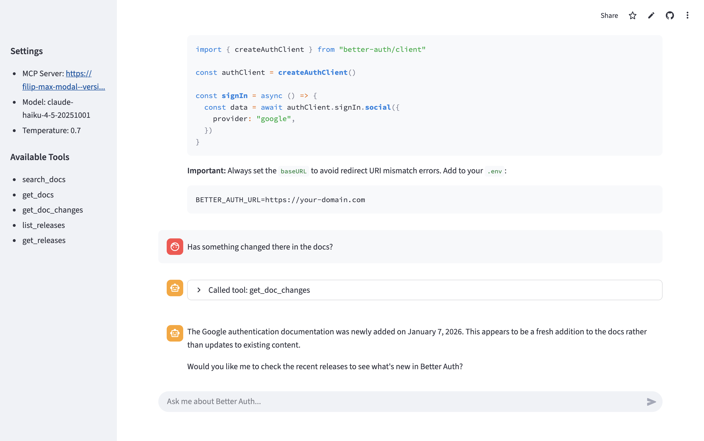
https://github.com/YairRT/EarthquakeProject_ScalableML
Predicts probability of earthquake aftershocks within 24 hours and 100km using USGS earthquake API data and feature engineering. Features include magnitude, depth, time since previous earthquake, distance to previous event, and rolling counts (6h, 24h). Logistic regression model evaluates events and displays risk on interactive map (red=high, green=low) with automatic flagging of >50% probability events. Streamlit dashboard provides region-based filtering and detailed earthquake information.
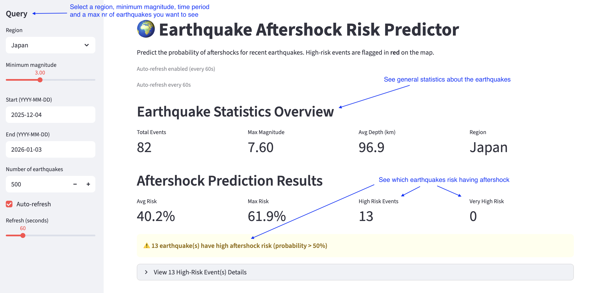
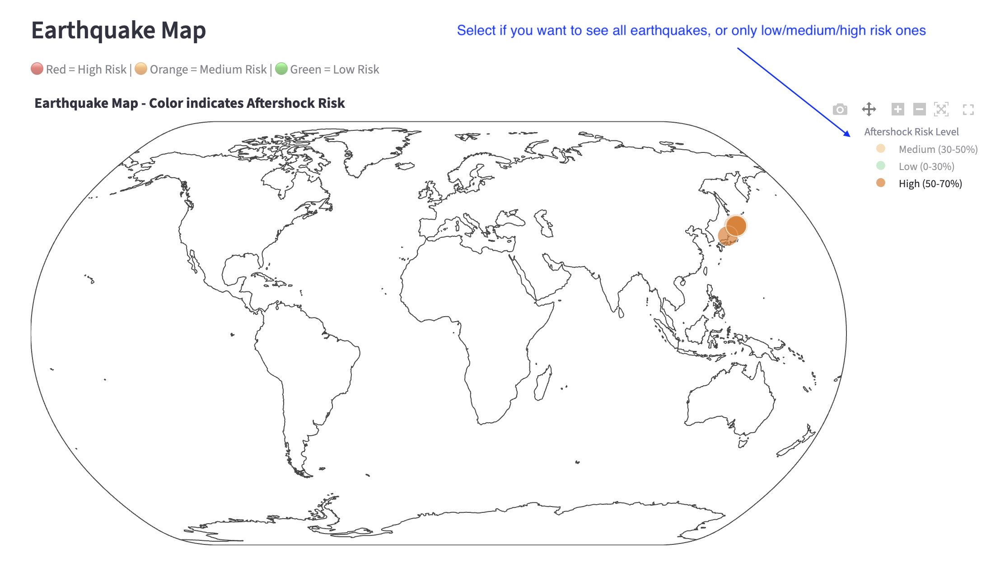
https://github.com/billychen-lab/ID2223-Project
Citibike intelligent assistant combines Random Forest demand prediction with real-time GBFS station status using an ensemble approach (40% historical, 60% real-time occupancy). Features include lagged demand (1h, 24h), time features, and current bikes/docks availability stored in Hopsworks offline and online feature groups. RAG system uses FAISS index over prediction data with SentenceTransformers embeddings and OpenAI LLM for natural language Q&A. HuggingFace Space UI allows users to find best rental locations and predict busy stations.
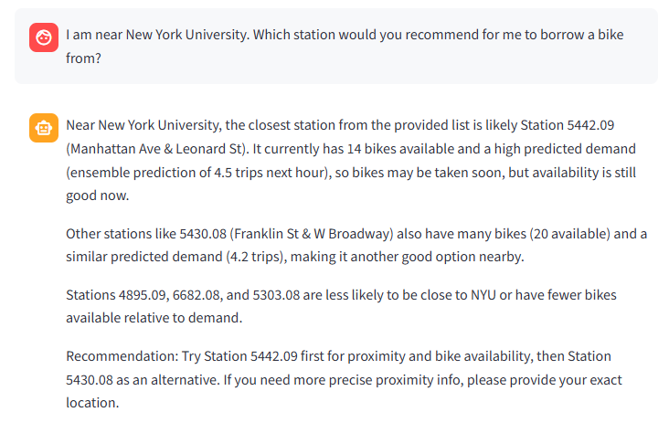
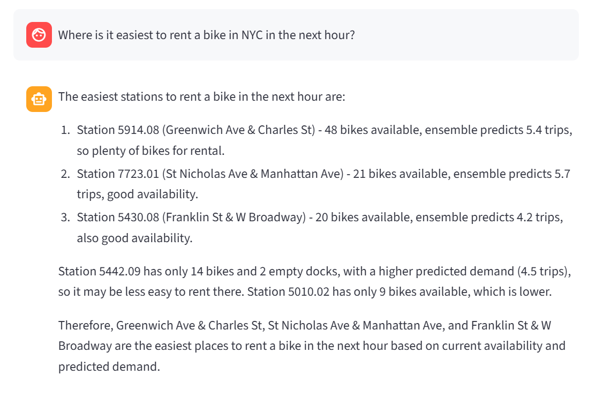
https://github.com/JarlSteph/BirdUp
Predicts daily white-tailed eagle and golden eagle sighting probabilities across Swedish regions using eBird observations and Open-Meteo weather data. Neural network models (MLP) use lagged features (5 days), weather (wind, rain, temperature), and cyclical time encoding with hyperparameter-tuned architectures. Feature store in Hopsworks manages 2011-2025 data with automated daily inference via GitHub Actions. Frontend visualizes predictions per region with hindcast confusion matrices showing model performance.
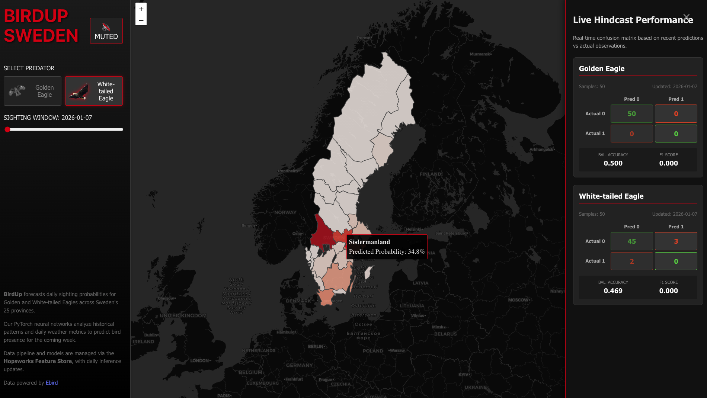
https://github.com/vereesmort/agentic-rag-gdpr-noyb
Agentic RAG system for GDPR articles and NOYB decision cases using a dual knowledge base (gdprhub.eu articles and enforcement decisions). Two-model architecture with a reasoning model (Kimi-K2-Thinking) and a tool-calling model (Llama-3.2-3B) orchestrates conversations. ChromaDB vector store with all-mpnet-base-v2 embeddings enables semantic search across both sources. Streamlit interface provides cited responses with weekly case export pipeline maintaining up-to-date privacy enforcement data.
https://github.com/jpruzcuen/scalable_ml
Predicts spruce bark beetle outbreak likelihood in Sweden using ERA5 Land weather data (temperature, precipitation, soil moisture, solar radiation) and Google Earth Engine NDVI satellite imagery. Binary classification model trained on presence-only Artportalen observations with background signal from similar species. Features include lagged weather (t, t-1, t-2 months) and NDVI values with monthly predictions. Streamlit dashboard displays outbreak risk predictions across Swedish regions.
https://github.com/alvaro-mazcu/scalable-project
Predicts flight delays at European airports using historical flight data combined with weather forecasts. The system builds a feature pipeline that collects airport-level delay statistics and meteorological conditions to train predictive models. An inference pipeline provides real-time delay probability estimates for upcoming flights. The dashboard visualizes delay predictions across multiple European airports with interactive exploration.
https://github.com/sunnypawat/agentic-crypto-researcher
Agentic crypto researcher performs autonomous analysis of cryptocurrencies using a Plan-Tools-Observations-Synthesis loop with visible agent traces. FastAPI backend fetches 30-day price history from CoinGecko, computes RSI(14) and MACD(12,26,9), and retrieves curated news from CryptoPanic Developer v2 API. Stateful memory with rolling summaries and streaming SSE events show agent reasoning to the Next.js frontend. Vercel deployment with tool-augmented RAG pattern using API-based retrieval instead of vector DB.
https://github.com/Isabell257/id2223-project
Predicts water temperature at Södertälje bathing sites using municipality open data and Open-Meteo weather forecasts. CatBoost model uses lagged water temperatures (1-3 days), weather features (temperature, precipitation, wind, solar radiation), and categorical bath location encoding. Feature pipeline with daily GitHub Actions updates stores validated data in Hopsworks with Great Expectations checks. GitHub Pages dashboard displays hindsight graphs comparing predictions to actual measurements and next-day forecasts per location.
https://github.com/klari26/ID2223-Project
Predicts avalanche risk levels (0-4 scale) for major Norwegian ski resorts using Open-Meteo weather forecasts and digital terrain model (DTM) analysis. Individual XGBoost models per resort use features including temperature, wind, precipitation, slope, elevation, aspect, and lagged warning levels (1-3 days previous). Engineered interaction features capture snow load on steep terrain, wind-driven snow transport, and rain-on-snow risk. Streamlit UI shows interactive map with color-coded risk markers and 7-day forecasts with >90% accuracy.
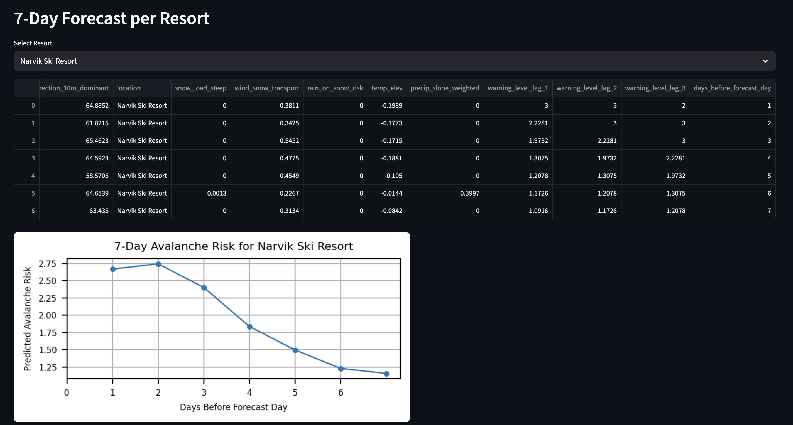
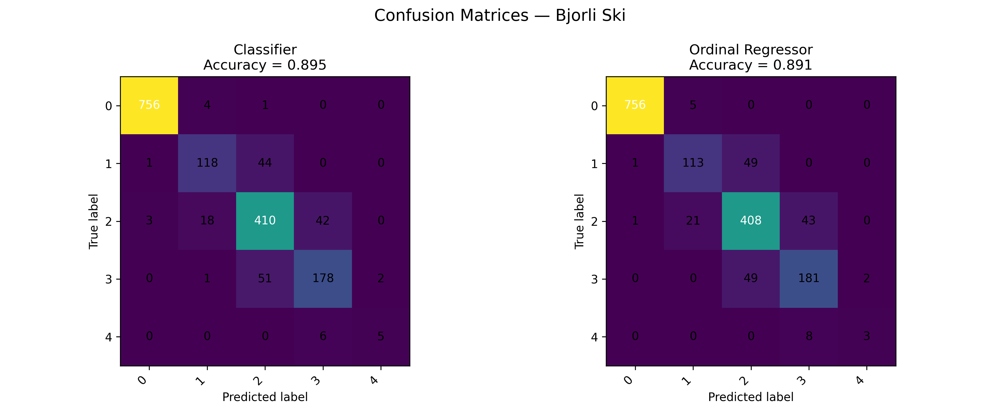
https://github.com/Zeyashen/ID2223-FinalProject
Predicts snow depth in Åre, Sweden using HistGradientBoostingRegressor on 20 years of Open-Meteo historical weather data. System 2 architecture combines an analytical model (exact snow depth prediction) with a generative LLM (Qwen-2.5-7B as “Sarcastic Ski Instructor”) for natural language advice. Features include temperature, precipitation, wind speed, and snowfall with 7-day autoregressive forecasts. HuggingFace Space chatbot interface translates raw predictions into actionable ski recommendations.
https://github.com/jacobb260/hockey-agent
NHL hockey agent powered by Gemma 3 27B provides natural language access to NHL API statistics from 2000 onward with daily data updates. Tools enable player overviews, top performer comparisons, team information, game details, and goaltender analysis with results in markdown tables. Data stored in Hopsworks with automated updates maintaining current season statistics. Gradio interface allows users to query and compare hockey statistics conversationally.
https://github.com/datskiw/atwEarthTamagotchi
Forecasts global CO2 concentration and temperature anomalies using NOAA and NASA data with two-stage models (linear trend + gradient boosting residual). Features include lag features (1, 2, 3, 6, 12 months), rolling means (3, 12 months), and cyclical seasonality encoding with 24-month autoregressive forecasts. Earth Health Index (EHI) combines CO2 and temperature predictions into a 0-100 score displayed as Tamagotchi-style Earth visualization. Streamlit dashboard shows forecast trajectories and hindcast evaluation with automated monthly GitHub Actions updates.
https://github.com/cimun/id2223_project
Predicts hourly wind and solar power generation for Swedish regions (SE1-SE4) using Open-Meteo weather forecasts and ENTSO-E actual generation data. Domain-specific features include sin/cos temporal encoding, solar elevation angle/azimuth calculations, and wind speed cubed (power proportional to v³). XGBoost regression models per region/source trained weekly with results displayed in Streamlit dashboard. Hourly GitHub Actions pipelines provide 24-hour day-ahead forecasts with hindcast comparisons.
https://github.com/SerkanAnar/metro-delay-prediction
Predicts 30-minute average delays for Stockholm SL metro lines (blå, grön, röd) using GTFS Regional and Static APIs from Trafiklab. MLP Regressor achieves 0.905 R2 score using features including previous delays (60min, 30min, current), weekday, and line encoding. Models train on gradually accumulating data with daily inference every 30 minutes (7 AM-11 PM UTC). GitHub Pages dashboard shows forecasts and hindcasts with route-specific predictions.
https://github.com/Selinaliu1030/DL-FinalProject
Predicts forest fire risk levels in California using satellite imagery, weather data, and historical fire records. The system combines deep learning techniques with environmental features such as temperature, humidity, wind patterns, and vegetation indices. A feature pipeline continuously collects and processes fire-related data for model training and real-time inference. The dashboard provides an interactive map of California showing fire risk predictions by region.
https://github.com/Khadija20032003/LawyerChat
RAG chatbot for SEC 10-K risk factor disclosures using ChromaDB vector store with sentence-transformers/all-MiniLM-L6-v2 embeddings and Llama-3.2-1B-Instruct LLM. System supports dual-source retrieval from pre-indexed SEC database and user-uploaded PDFs with on-the-fly processing. LangChain orchestrates retrieval-augmented generation with automated dataset updates via GitHub Actions. Gradio interface allows investors, compliance teams, and researchers to query risk factors with context-aware answers.
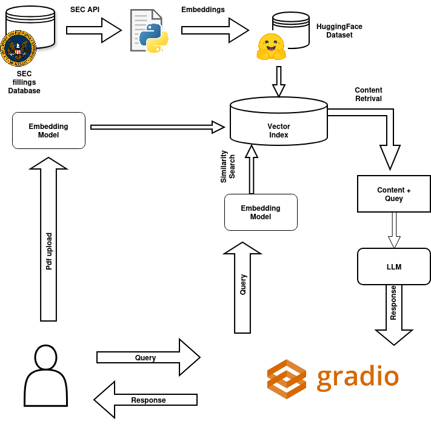
https://github.com/Kajlid/HappySardines
Predicts bus and tram crowding levels (0-6 occupancy status) in Östergötland using GTFS-RT data from KoDa API with aggressive class weighting to handle severe imbalance (72.3% empty). XGBoost classifier uses location, time, weather (Open-Meteo), holidays (Svenska Dagar), and vehicle features with 1-minute window aggregation. Precomputed heatmap grid (2000 cells × 38 time slots) stored in Hopsworks enables instant UI updates. Streamlit/Folium interface displays interactive map with click-based predictions and monitoring dashboard tracking model performance.
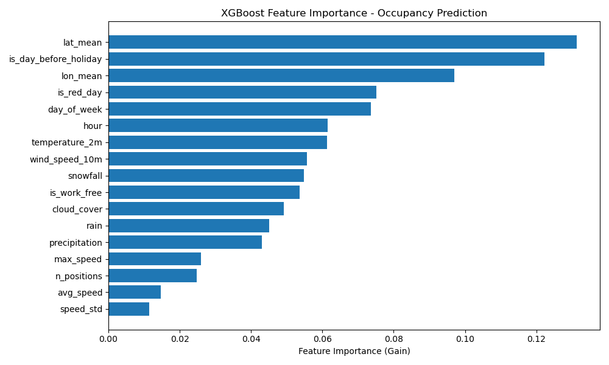
https://github.com/Jiananliu12138/ID2223_Project
Predicts electricity prices for the SE3 bidding zone in Sweden using historical price data, weather features, and energy market indicators. The system implements a feature pipeline that collects and processes time-series data including temperature, wind, and consumption patterns. Machine learning models forecast day-ahead prices to help consumers and traders plan energy usage. The dashboard visualizes predicted vs actual prices with interactive time-series charts.
https://github.com/emanueleminotti/ID2223-ScalableMLDL_Project
Predicts pollen concentration levels using weather data, seasonal patterns, and historical pollen measurements. The feature pipeline collects meteorological and phenological data to capture environmental conditions affecting pollen dispersal. Models are trained to forecast daily pollen levels to help allergy sufferers plan their outdoor activities. The UI displays pollen forecasts with severity indicators and personalized alerts.
https://github.com/gusreinaos/github-trend-predictor
Predicts which GitHub repositories will trend based on star growth patterns, contributor activity, and topic metadata. The feature pipeline tracks repository metrics over time using the GitHub API to build a dataset of trending indicators. Machine learning models identify early signals of repositories about to gain popularity. The dashboard showcases predicted trending repos with confidence scores and historical accuracy metrics.
https://github.com/zoomerwork/ID2223_project
Predicts traffic flow patterns across Toronto using city open data traffic count sensors, weather data, and temporal features. The feature pipeline collects hourly traffic volumes from multiple sensor locations combined with meteorological conditions. Machine learning models forecast traffic density to help commuters plan optimal routes. The dashboard provides an interactive map showing predicted traffic conditions for different times of day.
https://github.com/Fredrikstrm/nhl-game-predictor
Predicts NHL game outcomes using team statistics, player performance data, and historical matchup records from the NHL API. The feature pipeline continuously updates team and player metrics throughout the season to capture current form. Models predict win probabilities for upcoming games considering home/away advantages and recent performance trends. The dashboard displays predictions for upcoming games with team comparisons and historical accuracy.
https://github.com/Enis-Isik/FloodWatch
Predicts river flooding risk globally using hydrological data, precipitation forecasts, and river gauge measurements. The system monitors river levels across multiple stations and combines with weather forecast data to predict flood events. Feature engineering captures rainfall accumulation, soil saturation estimates, and upstream flow patterns. The dashboard provides interactive maps showing real-time flood risk levels with alert notifications for high-risk areas.
https://github.com/elmira1/police-project-id2223
Forecasts crime event patterns across Swedish municipalities using publicly available police event data (Polisens händelser). The feature pipeline collects and categorizes crime events by type, location, and time, enriched with demographic and socioeconomic factors. Models predict daily crime event volumes and categories for different regions. The dashboard displays geographic crime forecasts with trend analysis and historical pattern visualization.
https://github.com/wolffbe/dsa
Predicts content moderation decisions using the EU Digital Services Act (DSA) transparency database of platform moderation actions. The feature pipeline processes moderation reports to extract patterns in content type, platform policies, and enforcement outcomes. Machine learning models predict likely moderation outcomes for different types of content. The dashboard visualizes moderation trends across platforms with prediction capabilities for new content scenarios.
https://github.com/Ashilion/footplayer_stats_predictor
Predicts football match outcomes using individual player statistics and performance metrics rather than just team-level data. The feature pipeline aggregates player-level data including form, fitness, and historical performance against specific opponents. Models weight individual player contributions to generate match outcome predictions. The dashboard displays predictions with player-level insights showing key contributors to predicted outcomes.
https://github.com/dnagard/road-risk-ml
Predicts hazardous road conditions in Stockholm using weather data, road sensor measurements, and historical accident records. The feature pipeline combines temperature, precipitation, and road surface conditions with traffic data to assess risk levels. Models predict probability of dangerous driving conditions for different road segments. The dashboard provides an interactive map of Stockholm showing risk levels and recommended routes for safer commuting.